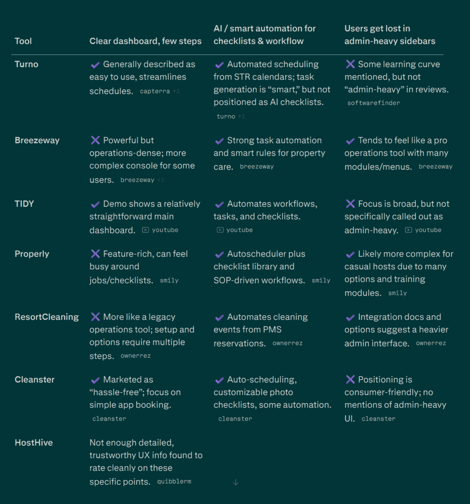
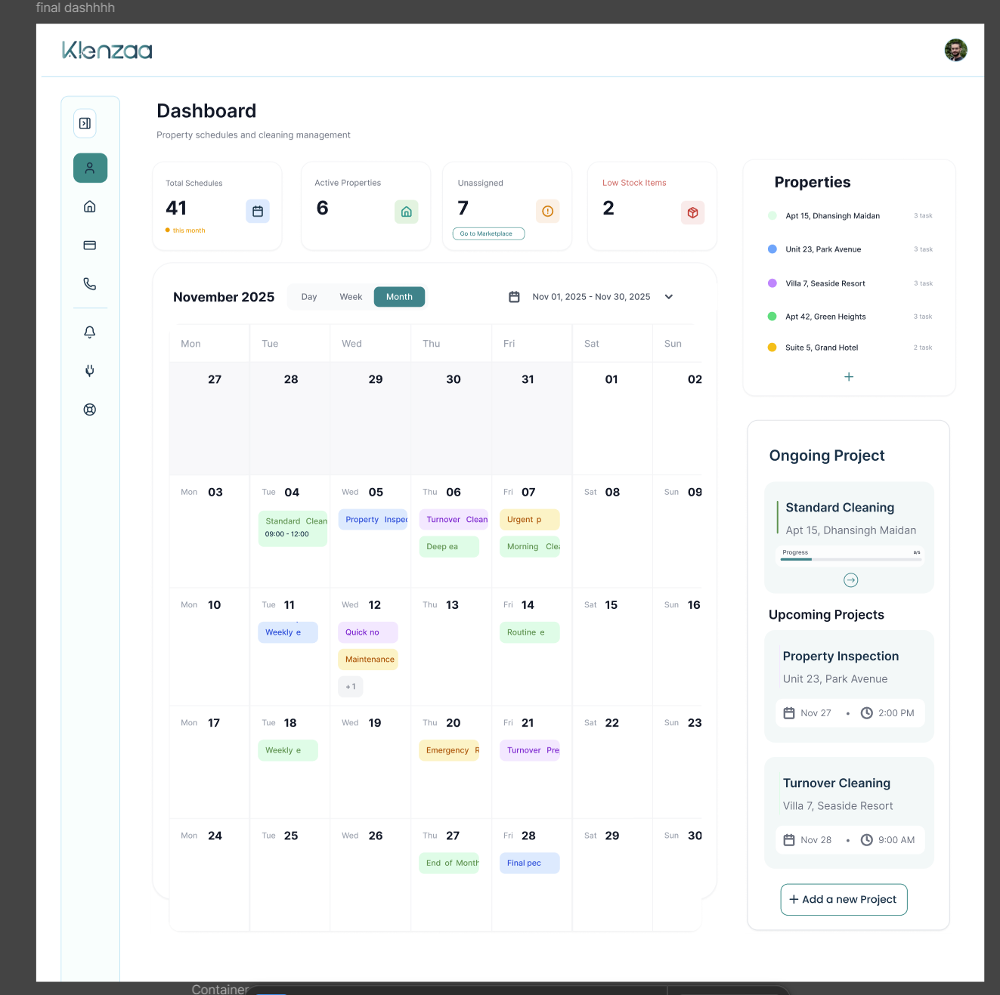
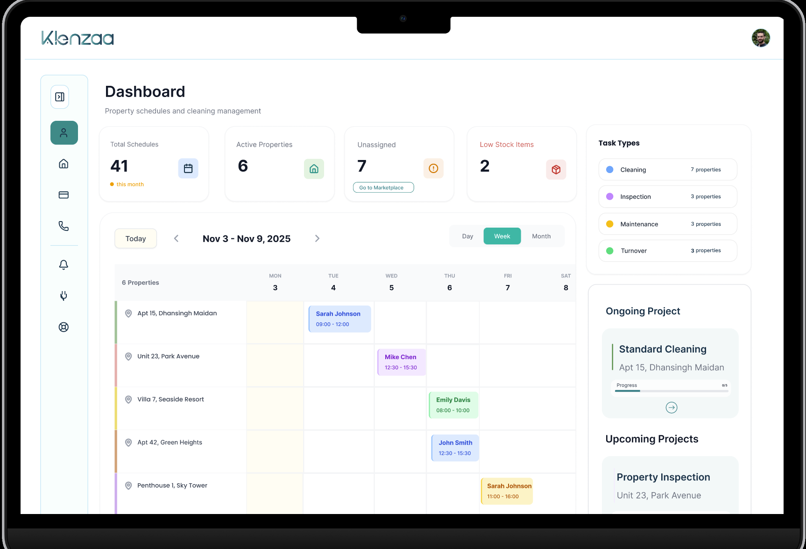
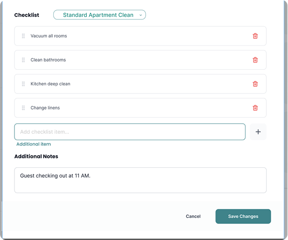

Case study
A host side MVP for a two sided STR cleaning marketplace, designed from scratch as the sole UX and UI designer on a freelance engagement.
Klenzaa is a two sided platform connecting STR hosts with cleaning professionals who handle turnovers between guests. There was no existing product when I started. The client had a validated business idea, target personas, and a business level competitor analysis already in place. My job was to design the MVP that would carry all of it. They pointed me toward tools like Turno and asked me to study what worked, so Klenzaa could improve on it.
So I ran my own teardown, not at the business or positioning level, but at the interaction level: was the dashboard clear with minimal steps, did the tool offer real automation for checklists and scheduling, or did navigation quietly turn admin heavy. I compared Turno, Breezeway, TIDY, Properly, ResortCleaning, Cleanster, and HostHive against those three questions.

Hosts had no clean way to hand off a cleaning task to the right person with the right instructions.
Hosts couldn't see what stage a cleaning was at without checking manually.
Without a shared checklist system, cleaning quality varied from property to property.
Designed property-centric task assignment with role-specific views for hosts and cleaners.
Built a single-source dashboard so hosts see real-time status updates without manual check-ins.
Created modular, priority-tagged checklists to maintain consistent cleaning quality across properties.
The MVP was shaped around fast property setup, understandable scheduling, property centric checklist assignment, structured checklist management, and a dashboard that acts as a single source of truth.
Each property got its own color, plotted across a shared calendar view. It looked complete and communicated everything at a glance, in theory.

What broke: past a handful of properties, hosts couldn't remember which color belonged to which property.
Every property got a row, with its schedule laid out across the timeline. Reading the dashboard stopped requiring memorization.

What was still unresolved: questions marked directly on the screen. Color for task type too? What about same day conflicts?
Version 2 with each flagged question resolved on purpose, not a visual overhaul.
One checklist with a toggle, or two separate checklists?
Two separate checklists. The host checklist covers what the host needs to personally complete or confirm. The cleaner checklist, tagged For Cleaners, covers the cleaning tasks assigned to whoever is doing the job that day. They're not two views filtered from one shared list, they're built and owned separately, which is why the checklist itself carries a For Cleaners tag rather than a toggle switch.
Why organize checklist items into modules?
Because different properties need different combinations of tasks. Recommended modules like Kitchen, Main Room, Bedroom, and Bathroom can be added to a checklist or skipped depending on the property, plus a General module for tasks that don't belong to a specific room. A host builds the checklist a property actually needs instead of editing one long master list every time.
Why give individual items a priority tag?
So the items that matter most don't get lost inside a longer module. A task like Broom hall can be marked High Priority inside the General module, so a cleaner moving quickly through the list still sees what can't be skipped.
If a host edits a checklist while looking at one scheduled clean, how do they know whether they changed today's job or every future job at every property?
A warning label depends on someone reading it. So the interface removes the mistake instead. The default items on a scheduled clean can't be edited from that screen at all, since they're meant to stay consistent and automate going forward. A host can only add something extra for that one job. Changing the actual standard means opening the Checklists section on purpose, a different place for a different kind of edit.

A property-centric management tab that gives hosts full visibility over their properties, active turnover schedules, assigned cleaners, and specific property details in a single clean panel.
Buttons, cards, status chips, side panels, nothing more. Building a bigger system ahead of real feedback is a bet on assumptions that haven't been tested yet. Klenzaa's component set stayed deliberately lean so it could evolve once real hosts and cleaners had used it, instead of locking in decisions before there was proof they were the right ones.
The client's real long term goal is automated setup, pulling property data directly from Airbnb or Vrbo listings. Manual setup isn't a placeholder for that, it's the foundation it will sit on top of. Integration hooks for that pull already exist from this engagement, even though the automation itself sat outside the three month scope. If two more weeks opened up, this is where they would go, since it's the part furthest from where the product is actually headed.
The live product uses this UI and these branding guidelines today. It's still evolving, and I don't have visibility into how real hosts or cleaners have responded since handoff. That's the honest state of it, not a guess dressed up as a metric.
Before this project, most of my decisions were instinctive first, justified after. Klenzaa is where that flipped. Every element on a screen now needs a reason it exists, down to why a card is a certain size or why a color shows up here and not there.